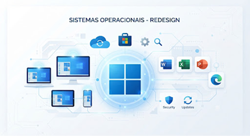

O Windows
O Microsoft Windows é uma família de sistemas operacionais de código fechado criados pela empresa Microsoft, fundada por Bill Gates e Paul Allen. A primeira versão do Windows foi lançada em 1985 e, desde então, tornou-se o sistema operacional mais popular do mundo para computadores pessoais.
O Windows é conhecido por sua interface gráfica amigável e sua vasta compatibilidade com softwares e hardwares. Ele domina o mercado corporativo e doméstico, oferecendo diversas edições, como Windows Home, Pro e Enterprise, para atender a diferentes necessidades.
